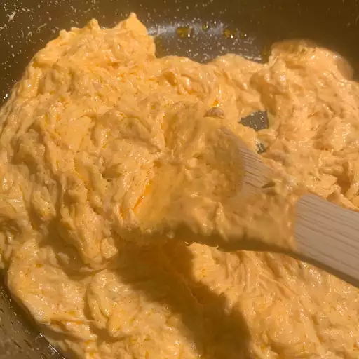

Buffalo Chicken Dip

Description
This tangy, creamy Buffalo chicken dip tastes just like Buffalo chicken wings!
Perfect for parties and game day, this chicken dip is best served hot with crackers and celery sticks.
Everyone loves the results!
Ingredients
- Chicken
- Cream Cheese
- Ranch Dressing
- Hot Sauce
- Cheese
Steps
- Heat chicken and hot pepper sauce in a skillet over medium heat until heated through, 3 to 5 minutes.
Stir in cream cheese and ranch dressing. Cook and stir until well blended and warm, 3 to 5 minutes.
- Mix in 1/2 of the Cheddar cheese, and transfer the mixture to a slow cooker.
Sprinkle the remaining cheese over top.
- Cover and cook on Low until dip is hot and bubbly, about 35 minutes.
- Serve with celery sticks and crackers.